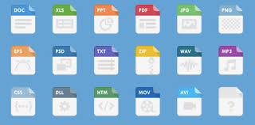

EXPORTACIÓN Y PUBLICACIÓN
FORMATOS DE EXPORTACIÓN
Una vez finalizado un proyecto en eXeLearning, se puede exportar en los siguientes formatos:
- HTML5: este formato genera una carpeta con archivos web que pueden abrirse en cualquier navegador. Es ideal para distribuir el contenido en sitios web, memorias USB, o para que el alumnado lo use sin necesidad de conexión.
- SCORM 1.2 / SCORM 2004: formatos compatibles con plataformas de gestión del aprendizaje (LMS) como Moodle, Chamilo o Blackboard. Al exportar en SCORM, el contenido puede integrarse en un curso virtual, permitiendo además el seguimiento del progreso y la evaluación del estudiante.
- IMS Content Package: otro formato estándar para entornos virtuales de aprendizaje, usado en algunas plataformas educativas.
- ePub: ideal para convertir el recurso en un libro digital compatible con lectores electrónicos o aplicaciones de lectura.
- PDF (versión estática): aunque se pierde la interactividad, permite distribuir el contenido como documento imprimible.

PUBLICACIÓN EN DISTINTAS PLATAFORMAS
El contenido exportado en formato SCORM o IMS puede ser fácilmente subido a plataformas como Moodle mediante la opción “Agregar actividad o recurso” y luego en “Paquete SCORM”. Esto permite a los docentes integrar su unidad didáctica dentro de un curso online, conservando la navegación interna, los ejercicios interactivos y el seguimiento del alumno.
En el caso del formato HTML, puede subirse a un servidor web, compartirse por correo electrónico o incluso distribuirse mediante memorias USB, ya que no requiere conexión a internet para visualizarse.
eXeLearning también fomenta la reutilización y colaboración. Muchos docentes comparten sus materiales en repositorios educativos abiertos, como el Banco de Recursos de eXeLearning o Procomún. Esto permite adaptar, mejorar y reutilizar contenidos creados por otros usuarios.